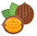

×
This interactive map was developed to help locate nursery sources for fruit and nut cultivars that are recommended in Kentucky Cooperative Extension Service publications or commonly asked for in Kentucky. This map interactive map should be seen as a complementary resource to the publication.
Horticulture Department Fact Sheet HortFact-3002: Fruit and Nut Culivar Sources -- 2002.


About This Map
This interactive map was developed to help locate nursery sources for fruit and nut cultivars that are recommended in Kentucky Cooperative Extension Service publications or commonly asked for in Kentucky. This map interactive map should be seen as a complementary resource to the publication.
Horticulture Department Fact Sheet HortFact-3002: Fruit and Nut Culivar Sources -- 2002.
Using This Map
Clicking/tapping an icon on the map shows further detail.
The +/- buttons at the top left zoom in and out, as does the mouse wheel, and standard mobile gestures.
Icons
|  | ||||
|---|---|---|---|---|
| Nursery Location | Tree Fruit Cultivars | Small Fruit Cultivars | Nut Cultivars | Nursery Supplies |
| (map only) | available | available | available | available |
| (tooltip only) | (tooltip only) | (tooltip only) | (tooltip only) |
Data Source
Horticulture Department Fact Sheet HortFact-3002: Fruit and Nut Culivar Sources -- 2020
Funding and Support
Funding and support for this project provided by the Kentucky Agricultural
Development Board through the
Kentucky Horticulture Council.
Map developed and maintained by
Joshua Knight
Senior Extension Associate, Horticulture
Center for Crop Diversification
University of Kentucky